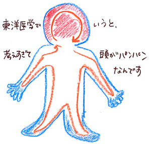

| 「ねぇ、『お笑い』見に行こうよ」
翌週の日曜日、優ちゃんから電話があった。お笑いなんて見たことないよ。と小さな声で言うと、優ちゃんは私の声が聞こえないみたいに、待ち合わせ場所と時間を一方的に言って電話を切った。
外出は難しい。出かける前に“菌がつかないように”１時間ほど体を洗い、外出用の服に着替えて、安定剤、水を持って出かけなければならない。そして帰ってきてからの数時間におよぶ“除菌”作業を考えると、気が遠くなりそうだった。
それでもお笑いという言葉が新鮮で珍しくて、私はのろのろと準備をした。
待ち合わせは新宿駅。久しぶりに都心に出て、その人の数とスピードに圧倒されてしまった。ほんの２か月半前は私もこの流れの中にいた。みんな迷うことなくまっすぐに目的の地に向かっている。でも私は人の体に触れたくないから、どうしても歩くのが遅くなってしまう。並外れて遅いスピードで歩く私を、迷惑そうな顔で一瞥し追いこしていく人がいた。不思議そうな顔でジロジロ見てくる人もいる。私は鞄を両手でかかえて、なるべくすみっこの、人の迷惑にならなそうなところを歩いていた。その時、横から懐かしい声が聞こえた。
「朋美」
優ちゃんだった。優ちゃんは私をかばうように、人の波が多い方を歩いてくれる。けれど私には触れない。普通の人だったら５分とかからない場所に行くのを、私たちは30分もかけて歩いた。
「ごめんね」
私がつぶやくと、優ちゃんは私の顔を見て困ったように笑う。
「謝るなんて、朋美らしくないよ。早く歩いたからって、いいことなんてないし」
今日の優ちゃんは地味なＴシャツにジーパン。いつものＯＬの延長のような服装と全然雰囲気が違って、何だか親しみがわく。
劇場に着いてお笑いライブが始まった。あまり名の知られていない芸人だからか、会場はがらんとして大して笑い声は聞こえなかった。でも隣の優ちゃんは楽しげに笑う。
私も見ること、聞くことに集中しようと思う。今日帰ってからのこと、明日のこと、将来のこと、何も考えない。今、この瞬間に集中して、目の前のお笑いだけを考える。あっという間にその世界に引き込まれた。普段目にしている世界の中に、私が考えなかった笑いがひそんでいるんだと思った。笑っているうちに体がぽかぽかして、ライブが終わった後はひどく空腹だった。二人でポップコーンをたくさん食べる。お笑いのネタを二人で再現しながらポップコーンをかみくだき、笑う。
優ちゃんと別れて家に着いてからも私の気持ちは高揚していた。お風呂場で体を洗いながらも、何だかとてもすがすがしい気持ち。あぁそう言えば今日は安定剤を使わなかったなと思う。お風呂から出て、自分の部屋に戻ったら携帯の不在着信を知らせるランプが点滅していた。ヨシくんだった。２か月半前に会わなくなってから４度目の電話かな。もうずっと話していない。思いきって電話をかけようかな……。
ワンコールでヨシくんが出た。しばらく当たり障りのない話をした後、ヨシくんが真剣な口調で言う。
「今から会えないか」
心臓が音をたてて動きだす。
「……家の近くなら」
やっとそれだけ言えた。
「じゃあ、俺、今から朋美の家まで行くから。着いたら電話するから、ちょっと出てきてくれないかな」
優しい声だった。携帯を切って、また外出用の服に着替える。久々にヨシくんに会えるのは素直に嬉しかった。
１時間後くらいに電話があり、私は家の外に出た。重い空気の中にヨシくんが立っている。それでも今までと変わらない彼の姿を見たら、私の会社員の世界がぐんと近くなって涙がこぼれそうになった。
「久しぶり」
精一杯の笑顔をつくってヨシくんの顔を見た。ヨシくんも一瞬笑いかけたものの、でもすぐまた表情が厳しくなる。彼が私に近づいてくる。
「抱きしめていい？」
ヨシくんが私の目の前に来て言った。怖かった。でもここで首をふったら終わりになりそうな気がした。だから必死でうなづいた。
ふわっと体が包まれる。懐かしい匂い。感触。でももう前みたいに気持ちが落ちつかない。震えてくるのをさとられないようにしながら、体を離そうとした時、私の背中にまわしたヨシくんの手に力が入った。
「ごめん。もう、」
私の肩に顔を押しつけ、くぐもったヨシくんの声が聞こえた。その後の言葉は続かない。彼は泣いていた。
その瞬間、ヨシくんの気持ちが手にとるようにわかった。もう終わりにしたいんだ。怒りも涙もわいてこなくて、ただ心に何かが広がっていく。
「私は、大丈夫だから」
ヨシくんより強い力で、私は体を離す。でも顔を上にあげることはできなかった。「今までありがとう」何とかそうつぶやいて、私は家の中に入る。後ろに全神経を集中させたけど、ヨシくんが追ってくる気配はない。扉を閉めたら、どっと涙がこぼれてきた。
涙がこぼれるままに私はリビングへ向かう。お茶を飲んでいたお母さんが驚いたようにこちらを見た。
「どうしたの」
「お母さん、私、」
何を話そうとしてるのか自分でもわからなかった。おなかも唇もけいれんする。お母さんが近寄って、私の顔をのぞきこんだ。
「何、話してごらん」
涙がぽたぽたと頬を伝う。
「お母さん、私、会社辞めたい」
お母さんが驚いたように目を見開く。でもその顔もどんどん涙でかすんでいった。
「どうして。あんなに頑張って入社したじゃない。あそこまで出世したじゃない」
言葉がでない。声がでない。お母さんは必死で私の背中をさする。
「朋美は今はちょっと体調が悪いから悲観的に考えちゃうだけよ。大丈夫。部長さんもいつでも戻ってきてください、席は空けてますから、って言ってたのよ。ねぇ、もうちょっと落ち着いて考えたら？」
お母さんの声で頭が真っ白になっていく。私はお母さんの手を振り払った。
「ねぇ、会社に入ってない私はだめなの？ お母さん、お母さん、お母さん！」
お母さんの胸を両手でたたく。お母さんは呆然と立ちつくしていた。私はそばにあった皿を投げ、クッションを投げて、自分の部屋に走った。
翌日優ちゃんに電話して、会社帰りに寄ってもらった。
「どうしたの、朋美が電話くれるなんて珍しいじゃん」
私の目の前に優ちゃんがあぐらをかいて座った。
「でも嬉しいな」
屈託のない笑顔で私を見つめる。ありがとう、優ちゃん、来てくれてありがとう。でも声にならない。変わりに涙がまたこぼれ落ちた。優ちゃんは何も言わない。ただ優ちゃんも泣きそうになっている。しばらく見つめ合っていたら、涙は乾いてきた。
「ヨシくんと別れたの」
「うん」
「会社辞めようと思うの」
「うん、うん」
自分に言い聞かせるように言ったら、優ちゃんが何度もうなづく。おなかがまたけいれんしてきた。体が泣いてる。何かに悔しくて悲しくて、自分を刺したい気持ちになってきた。
「私、なんの取り柄もない。私が生きていても何の意味もない。誰の役にも立たない。もうどう生きていったらいいか、わからない」
一息に言って私は床につっぷした。背中に大きな墓石がのったようで起き上がれない。どんどん落ちていく。重い。床に自分がのめりこんでいきそう。
頭上からいつもと変わらない優ちゃんの声がした。
「どうして。朋美は何も変わっていないよ。彼氏がいなくなったって、会社辞めたって、朋美自身からは何もなくなってないよ」
顔だけあげた。優ちゃんが微笑んでる。
「起きて、一緒に食べよう」
ケーキの箱を上にかかげる。
優ちゃんが皿を取りに行っている間に私はゆっくり起き上がった。重くてふらふらする。それでも生クリームを口に入れた。ふんわりとした甘さが口に広がる。
「おいしいね」
思わず口をついて出た。「うん」と言って、優ちゃんがフォークを置く。
「それで十分じゃない。お笑い見ておもしろくて、ケーキ食べて、おいしくて。それ以外に人が生きている意味ってないんじゃないかなぁ。少なくとも私はそうだよ」
首をかたむけて私を見る。
「ゆうちゃーーーん」
私は自分から優ちゃんの胸に飛び込んだ。優ちゃんのいい香りがする。背中に優ちゃんの手が触れる。こんなに触られるのが気持ちよかったこと、病気の時も、その前も、なかった気がする。
半年後。
私はあの後すぐに会社を退社して、ファーストフード店で週３日働きながら、今もお母さんと暮らしている。お母さんは会社を辞めることについて、もう何も言わなかった。でも私がファーストフード店からおみやげにチキンを持って帰ると嬉しそうで、そういう時は一緒に夕食を食べるようになった。
病状は半年前に比べればちょっとマシ程度で、ちっとも変わってない。家に帰れば異常なほど洗ってしまうし、お客さんに体が触れてお店で安定剤を飲んでしまうこともある。だから週３日働いているのを５日にはできないけど、でも、する必要もないじゃないかと思う。週５日働くことが偉いとは今は思わない。
働いている時にお客さんのおいしそうに食べてる姿が見られたらちょっと嬉しいし、週１日ゆうちゃんと『お笑い』を見に行って、その後ケーキ食べるのが幸せだし、そう感じられるだけで十分。だからって今に満足しているわけじゃないし、病気が本当に治ったらいいなと考えることもある。でもそれは逃げてる気もして、ゼロにすることより、一生付き合っていこうと腹をくくる。
最近、強迫性やうつ病の例のサークルに行ってケンカをした。きっかけは、江崎さんが「薬の量を増やしてでも、仕事を始めたい」って言いだしたこと。
理恵というおかっぱの子が、同感、とうなづく。俺は治療に専念すべきと言う人。仕事を始めたい気持ちはあるけど、薬を増やすのは怖いな、という声も。
「実際働いている朋美はどう思う？」
意見が分かれて、理恵が私に聞いた。
「私は薬の量を増やしても、には反対かな」
言葉を選びながら続けた。
「だって普通に生活している分には今の量で大丈夫なわけでしょう？ 外に出てもその量で大丈夫ならいいと思うけど、あえて薬を増やしたら、そのツケはどこかに出てくる気がするけど」
「なんか良い子の意見って感じ」
徹という学生の子が、唇の端をゆがめて笑った。かちんときて、「どういうこと？」と彼に向き直る。徹くんは、落ち着いた口調で言った。
「自分は働いているから、江崎さんの気持ちはわからないんじゃないかって言ってんの。結局働かないと社会で認められないってことが、どれだけ辛いかあんたはわかってないんだよ」
頭にきて唇をかんだ。
「朋美さんってさ、自分は悟ってますって感じでなんか鼻につくんだよね。本当は俺たちのこと見下してるんじゃないの？ あっ、もしかして優越感を味わいたいから、あえて江崎さんの成長を止めてるとか」
徹くんがせせら笑った瞬間、私は側にあったおしぼりを彼の顔に投げつけた。
「私はわかってる、江崎さんの悔しさはわかってる。でも成長することがそんなに偉い？
社会で評価されることがそんなに重要？ それで何が残るの？ 」
私の激しい口調にシンとなった。お店の人たちも驚いてこちらを見ている。
「もう戻れない。何もなかった頃にはどうあがいても戻れない。でも私はわかったよ。ケーキのおいしさとか、人の温かさとかが、病気になる前よりずっとわかった。そういうことを言うと、病気になった悔しまぎれに言ってるんだっていう人がいる。でも違う。私は病気にならない人よりも、どん底に落ちた時の自分の生かし方を知ってる。辛い分だけ、めいっぱい生きてる自信がある」
江崎さんは泣いてた。徹くんはむっと押し黙り、席を立った。しばらしくして私も「白けさせてごめんね」と周りに謝って、店を出た。
駅の近くには噴水を囲むようにベンチが並び、みんな思い思いのことをして休憩している。私も自動販売機でジュースを買って、ベンチに腰かけた。
座ったままの私。立ち上がらない私。人から見たら後ろ向きかもしれない。でも体は青空と緑の中で、とってものびのびと呼吸している。この感覚を信じたい、と今は思う。
■（朋美さんのお母さんより）
娘はずっと手のかからない子でした。
朋美が小学校の時に夫と離婚しましたが、その後も成績が落ちることもなく、学校の先生も「友達が多くて明るい子」といつも褒めてくれました。私は娘に勉強しなさいとか、この職業に就きなさいとか何かを強制したことは一度もありません。何も言わなくても、私が願うことを私が言う前にできた子だったんです。
だから朋美が心の病気だと診断され、病院の先生から「お母さんの言動にも問題がある」と電話がかかってきた時は言葉で表せないほどショックでした。私のどこに問題があったんだろう。どこの育て方がいけなかったんだろうと悩みました。一時は支えようと思ったのですが、実際はそんな生易しいものではなく、日に日に荒れていく娘が怖かった。貯金も底をつき、もう何もかもやめて二人で心中してしまおうかとも思い始めました。
そんな時、朋美が会社を辞めたいと言いだし、もう本当におしまいだと思いました。でもその後に「会社にいない私はだめなの？」と娘に言われ、はっとしたんです。もしかしたら言葉や行動の端々で、女は自立しなければならないという自分の気持ちを押しつけていたのかもしれないと。
夫と別れた時、私は仕事をもっていて本当に良かったと思いました。国の補助と合わせれば、養育費がたとえもらえなくなっても、何とか生活していくことができますから。だから朋美にも、自分だけで歩いていけるような人になってほしいと心の中では願ってきました。それが知らず知らずに娘を追い詰めていたのかもしれません。
娘が心の病気になってからしばらくは、朋美を支えているようで、実は目を背けていたことに、やっと気づきました。会社を辞めて、仕事をしない朋美も受け入れる。そうしたら娘が自然とファーストフード店で働くようになり、何か吹っ切れたように笑うようになって嬉しかったです。会社を辞めさせたくないと願ってきたけれども、それは私の気持ち。それでは私の人生です。
と、言葉では言えるのですけど、気持ちは割り切れたわけではなくて、まだ私自身も不安定な毎日です。でも娘を抑えつけて自分の安定をはかるのではなくて、ありのままの娘と向き合う姿勢を忘れずにいたいと思います。育て方や過去のことはもう終わってしまったことだし、悔いたり自分を責めたりしたくないんです。もう一度ここからスタートを切りたいと思います。

|